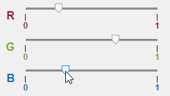

Create Event Data for Custom UI Component Callbacks
Every UI component callback has associated event data. This data
provides information about the specific user interaction associated with the callback.
MATLAB® automatically passes this event data as the second argument to any callback
function. For example, when you specify a ValueChangedFcn callback function
for a slider UI component, MATLAB passes the event data as the second argument to the callback function. The event
data has properties that provide specific information about the user interaction, including a
Value and PreviousValue property. This information is
often useful for app authors to access when programming a response to a user
interaction.
When you create a custom UI component with a public callback, that callback has some default associated event data. However, you can also define your own custom event data to provide additional information about the user interaction that executes the callback.
View Default Event Data
When you create an event–public callback pair for a custom UI component, the event data associated with the pair has two properties:
Source— The component that executes the callbackEventName— The name of the event associated with the callback
For more information about creating event–public callback pairs, see Create Callbacks for Custom UI Components in App Designer.
For example, in App Designer, create a custom RGB picker UI component that consists of
three sliders to choose red, green, and blue values to define a color. Save the component as
RGBPicker.mlapp.

Create an event named ColorChanged with associated public callback
ColorChangedFcn. Trigger the event to execute the callback whenever a
user changes the value of one of the sliders by adding this code to the
ValueChangedFcn callback of the underlying slider
components.
notify(comp,"ColorChanged")This code executes the ColorChangedFcn callback and passes it the
default event data. To view the event data, create a ColorChangedFcn
callback that displays the event data by typing these commands in the MATLAB Command Window.
comp = RGBPicker; comp.ColorChangedFcn = @(src,event)disp(event);
Adjust one of the sliders. The event data displays in the Command Window.
EventData with properties:
Source: [1×1 RGBPicker]
EventName: 'ColorChanged'For more information about the default event data, see event.EventData.
Define Custom Event Data
Define custom event data when you want to provide additional information about a user interaction to a callback function. For example, an app creator who uses the RGB picker component might want to access the new and previous selected color when an app user interacts with the component.
To customize event data, create a new class as a subclass of the
event.EventData class and define any additional event data properties. For
example, to create custom event data for the RGB picker component, create a new file named
RGBEventData.m and save it in the same folder as the custom RGB picker
component file. Add code to the file to:
Define a new class named
RGBEventData.Define two properties to store the previous RGB triplet and the new RGB triplet.
Define the class constructor to take in the previous and new RGB triplets and assign the values to the properties.
classdef RGBEventData < event.EventData properties PreviousRGB RGB end methods function eventData = RGBEventData(prevRGB,newRGB) eventData.PreviousRGB = prevRGB; eventData.RGB = newRGB; end end end
To create and use this event data for the custom UI component, add code to the
RGBPicker.mlapp file to:
Create a public property for the component named
RGBthat stores the slider values as an RGB triplet. For more information, see Create Public Properties for Custom UI Components in App Designer.In the
ValueChangedFcncallback of the underlying slider components, query the previous RGB value and the new RGB value, and use them to create the event data.Trigger the
ColorChangedevent to execute theColorChangedFcncallback with the custom event data by calling thenotifyfunction.
prevRGB = comp.RGB;
newRGB = [comp.RSlider.Value comp.GSlider.Value comp.BSlider.Value];
comp.RGB = newRGB;
eventData = RGBEventData(prevRGB,newRGB);
notify(comp,"ColorChanged",eventData);To view the full RGBPicker component code in App Designer, open the
example in Example: UI Component with Custom Event Data.
To view the event data, create a ColorChangedFcn callback that
displays the event data by typing these commands in the MATLAB Command Window.
comp = RGBPicker; comp.ColorChangedFcn = @(src,event)disp(event);
Adjust one of the sliders. The custom event data displays in the Command Window.
RGBEventData with properties:
PreviousRGB: [0 0 0]
RGB: [0.5630 0 0]
Source: [1×1 RGBPicker]
EventName: 'ColorChanged'Example: UI Component with Custom Event Data
Use the custom event data of the RGBPicker UI component to update the background color of a panel when the slider values changes.
Create an
RGBPickercomponent and a panel in a UI figure.Define a
ColorChangedFcncallback for the component that executes when a user updates one of the slider values.In the callback function, use the event input argument to access the new RGB triplet value associated with the user interaction and update the panel background color.
fig = uifigure; fig.Position(3:4) = [550 170]; c = RGBPicker(fig); p = uipanel(fig); p.Position = [300 10 200 130]; p.BackgroundColor = c.RGB; c.ColorChangedFcn = @(src,event)updatePanelColor(src,event,p); function updatePanelColor(src,event,p) color = event.RGB; p.BackgroundColor = color; end